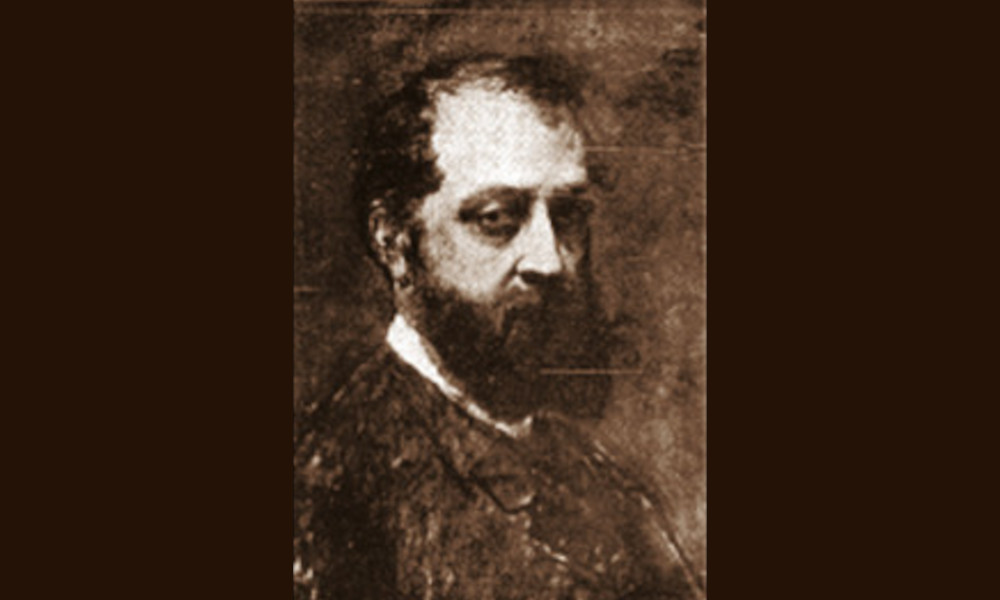

Capobianchi
Roma, entità attiva dal 1885 al 1919

- PERSONA
- Vincenzo Capobianchi, 1836–1928, pittore e antiquario
- INSEGNE
- Giacomini & Capobianchi
Giacomini & C.
Casa di Vendite Corvisieri & C. - IN CATALOGO
- Opere transitate, catalogo della Fondazione Zeri →
Vincenzo Capobianchi (1836-1928) nacque a Roma il 19 gennaio 1836, figlio di Tommaso Capobianchi, antiquario romano che aveva una galleria in via del Babuino 152. Formatosi presso l'Accademia di San Luca, dove studiò sotto la guida di Tommaso Minardi (1787-1871), si specializzò nella riproduzione di oggetti di antichità appartenenti alle collezioni pubbliche romane. Nell'iniziale carriera di pittore strinse un forte legame con l'artista catalano Mariano Fortuny (1838-1874), il quale ebbe su di lui un notevole ascendente.
Verosimilmente, iniziò parallelamente a lavorare con il padre nella galleria di via del Babuino, specializzandosi nello studio della numismatica e curando diversi cataloghi di vendita all'asta di monete antiche.
Nel corso degli anni Ottanta abbandonò gradualmente l'attività pittorica, per dedicarsi interamente al commercio di antichità. Intorno al 1885 si associò all'antiquario Giuseppe Giacomini, erede di un'attiva casa di vendite, fondando insieme la "Giacomini & C.", con sedi in Piazza Trinità dei Monti 6 e in via Sistina 16. Tra il 1892 e il 1893 Vincenzo Capobianchi fu incaricato di curare la vendita della collezione Borghese. Lasciata la società, nel 1901 si unì a Gustavo Corvisieri (?-1935) nell'impresa "Corvisieri & C.". Vincenzo Capobianchi morì nel 1928. La sua ultima dimora attestata fu una casa in Piazza Barberini 47.
Altri antiquari
Bibliografia essenziale
- De Callataÿ, F. (2016), Il venditore d'antichità by Vincenzo Capobianchi (1880): possibly the most scholarly work of the neo-Pompeian painting, In «Anabases», XXIII, pp. 47-73